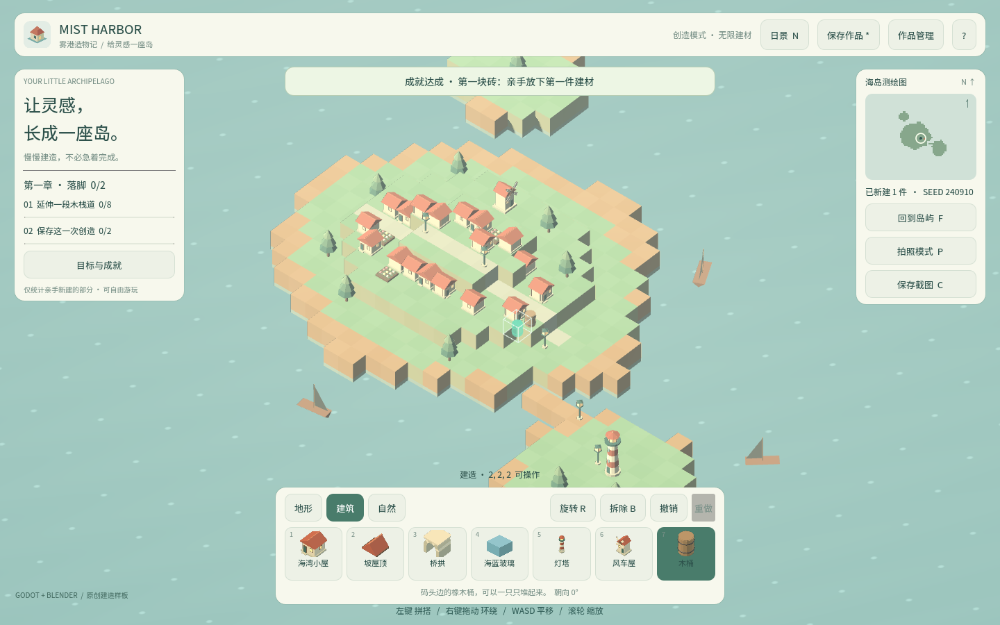
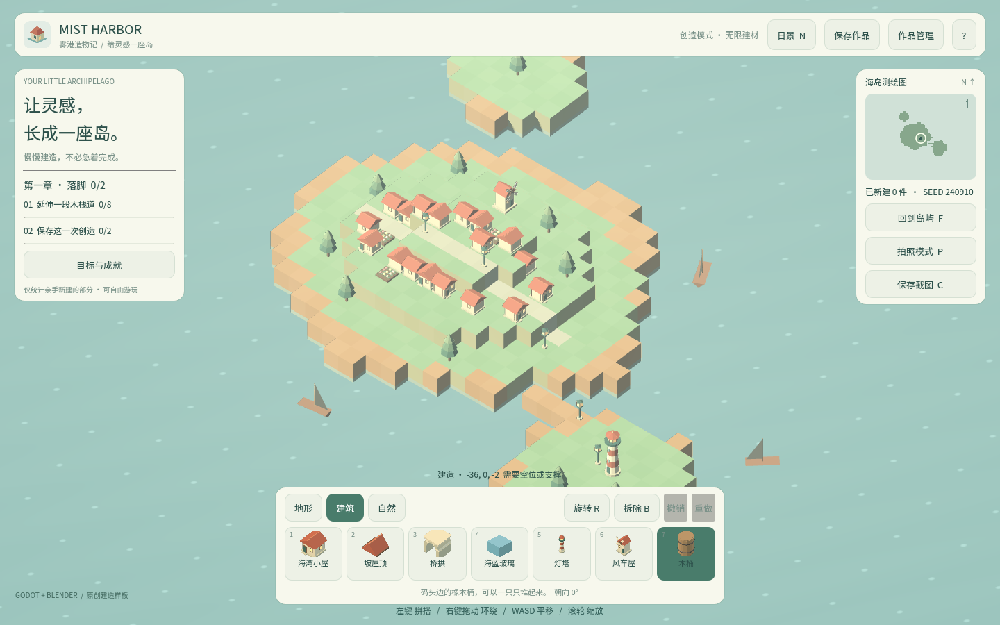
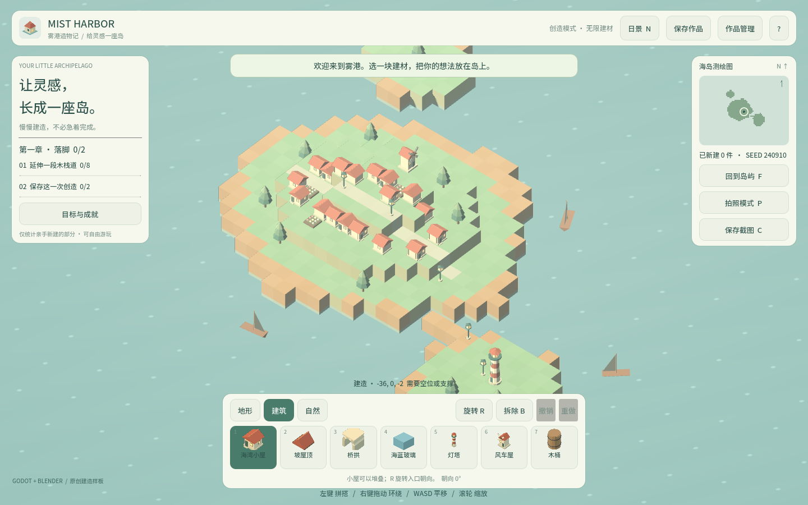

卷 2 · 第 13 章 缩略图与成就：两个"运行时机制"的设计
本章目标：读懂两个看似小、实则精妙的机制——
建材图标由 GLB 实时渲染生成（新增建材零代码），以及
成就为什么不能自己写盘（Web 下会毁掉存档）。
对应任务：T18（缩略图）/ T30 / T46（成就） | 对应文件：model_thumbnail.gd/achievements.gd
13.1 缩略图：图标不是画出来的，是渲染出来的
model_thumbnail.gd 用离屏 SubViewport 把每个 GLB 渲染成一张图标：
const SIZE := 192
_viewport = SubViewport.new()
_viewport.transparent_bg = true
_viewport.own_world_3d = true # 独立世界，不污染主场景
_viewport.msaa_3d = Viewport.MSAA_4X
_root.add_child(instance) # 实例化 GLB
await RenderingServer.frame_post_draw # 等两帧
var image := _viewport.get_texture().get_image()
_cache[kind] = ImageTexture.create_from_image(image)
thumbnail_ready.emit(kind)三个关键设计
| 设计 | 为什么 |
|---|---|
| --- | --- |
灯光参数抄 build_world.gd | SUN_COLOR/ENERGY/ROTATION、AMBIENT_* 与主场景一致 → 图标看起来就是放进世界的样子，而不是棚拍过曝 |
| 相机与游戏同角度（0.72/0.72 弧度） | 等距视角统一 |
bounds 来自 manifest.json | 用 godot_size 自动构图：camera.size = max(span, height) * 1.32 → 大小不同的模型都能填满画幅 |
健壮性
_has_content()抽样检查 alpha：渲染出来是空白（headless / dummy driver）就不缓存 → 调用方保留手绘图标ENABLED常量可一键回退到手绘图标- 队列
_queue+_busy：一次只渲一个，避免卡顿
📌 这就是第 08 章"四类建材零代码"的技术底气：图标也是渲染出来的，
所以"丢 GLB + 加一行 JSON"真的就够了。
13.2 成就：为什么解锁后不能立刻写盘
# Web writes to user:// asynchronously (IndexedDB): writing this file AFTER a
# world save loses the save. So unlocks are only flushed immediately BEFORE a
# world save (main.gd calls flush()) or when the app closes, never on their own schedule.
var _pending_flush := false这是本实训最"值钱"的一条注释。 背景：
- Web 平台的
user://写盘是异步的（IndexedDB） - 如果在一次世界存档之后再写成就文件，会破坏/覆盖刚写的存档
- 所以成就解锁只标记
_pending_flush = true，只在下一次存档之前或应用关闭时才落盘
解锁成就 → 只改内存 + 标记 pending
↓
玩家按 Ctrl+S → main.gd 先调 achievements.flush() → 再写世界存档
↓
（顺序反了就会丢档）其它设计点：
- 成就属于玩家不属于存档 → 状态存在
user://achievements.json，与槽位无关 - 定义来自
data/achievements.json（kind+target） progress_value()支持的 kind：total/variety/undone/saved/night_photo/kind:<id>NOTIFICATION_WM_CLOSE_REQUEST/WM_GO_BACK_REQUEST/PREDELETE都会flush()——覆盖关闭、移动端返回、进程销毁
13.3 两个机制的共同点
| 缩略图 | 成就 | |
|---|---|---|
| --- | --- | --- |
| 数据来源 | GLB + manifest.json | data/achievements.json |
| 状态存放 | 内存缓存 | user:// |
| 失败策略 | 空白则不缓存，回退手绘 | 写盘失败下次再试 |
| 设计原则 | 渲染而非手绘（可扩展） | 延后写盘（不破坏他人） |
一句话：两者都把"什么时候做"当成设计的一部分——
缩略图等两帧再取图，成就等存档前再写盘。时机错了，功能就是错的。
🌩 在云端 agent（web-cb）里是什么样
| 🖥 本地路线 | 🌩 云端 agent（web-cb） | |
|---|---|---|
| --- | --- | --- |
| 缩略图渲染 | 依赖本地 GPU | 云端/无头环境可能渲染不出内容 → 正是 _has_content() 的用武之地 |
| 成就写盘 | 本地文件系统，同步性可控 | Web/IndexedDB 异步，本实训的坑在云端同样存在 |
| 验证 | 本机跑 | 建议云端专门验一次"解锁成就→立即存档→重新载入" |
| 建议 | — | 把"成就+存档"的组合做成回归用例，因为它只在特定顺序下才暴露 |
🌩 这类 bug 的可怕之处：本地文件同步写，永远不复现；一到 Web 就偶发丢档。
13.4 常见坑速查（本章）
| 现象 | 原因 | 处理 |
|---|---|---|
| --- | --- | --- |
| 图标全空白 | 无头环境渲不出 / GLB 路径错 | 检查 _has_content，回退手绘 |
| 图标过曝或太暗 | 灯光参数与场景不一致 | 抄 build_world.gd 的灯光常量 |
| 大小模型构图不一致 | 没用 bounds | 从 manifest.json 读 godot_size |
| 解锁成就后存档丢失 | 写盘顺序反了 | 存档前先 flush() |
| 换存档槽成就丢了 | 槽位相关 | 成就应存 user:// 与槽位无关 |
| 关窗口后成就没保存 | 没处理 WM_CLOSE_REQUEST | flush() 挂到通知上 |
13.5 本章作业
- 说出缩略图为什么要
await RenderingServer.frame_post_draw两次 - 复述成就"必须延后写盘"的完整理由（至少两句，含 Web/IndexedDB）
- 新增一个成就：在
data/achievements.json里加一条kind: "kind:cottage"、target: 3，验证解锁 - 思考：如果缩略图渲染很慢，你会怎么改（至少两个方向）
🎓 教学提示（给教师 / 直播主）
- 概念锚点：时机即正确性。功能对不对，不只看"做了什么"，还看"什么时候做"。
- 课堂演示：现场演示"先存档后解锁"与"先解锁后存档"的差异（Web 构建下）。
- 高频误解：学生认为"解锁了就该立刻持久化"。引出写入顺序与平台异步。
- 讨论题：你的项目里有没有"顺序敏感"的写操作？怎么防止它被改坏？（答：注释 + 单一入口）
- 批改要点：作业 2 必须提到 Web 异步写 + 覆盖存档。
🖼 本章图集



📹 录屏分镜（9 分钟）
| 时间 | 画面 | 解说词要点 |
|---|---|---|
| --- | --- | --- |
| 00:00–02:00 | 建材栏图标（都是渲染出来的）+ 代码 | "图标不是画的，是渲的。" |
| 02:00–03:40 | 灯光/相机常量抄主场景 + bounds 构图 | "图标要长得像放进世界的样子。" |
| 03:40–05:00 | _has_content 回退策略 | "渲不出来就别缓存。" |
| 05:00–07:30 | 成就写盘顺序图（重点！） | "先 flush 再存档，反了就丢档。" |
| 07:30–09:00 | 作业 + 卷 2 小结 |
🎬 视频位（待录制）
把录好的视频放到course/media/video/13/（mp4 / webm / mov），重新执行 python tools/course_build.py 即会自动内嵌；首帧默认用本章第一张截图作为封面。分镜脚本见上一节。🖼 配图清单
| 文件名 | 内容 | 生成方式 |
|---|---|---|
| --- | --- | --- |
13-dock-icons.png | 建材栏：全部图标由 GLB 渲染 | python tools/course_capture.py --chapter 13 |
13-barrel-icon.png | 木桶图标（GLB 实时渲染生成，非手绘） | 同上 |
13-achievement-toast.png | 解锁成就的提示 | 同上 |
🎥 直播脚本（L3 片段，12 分钟）
- 开场故事："我们的存档在 Web 上神秘消失过一次"——讲述排查过程
- 演示：改代码让 flush 顺序反过来，在浏览器里复现丢档
- 互动：让观众检查自己项目里有没有"顺序敏感"的写入
- 收尾：卷 2 总结 + 预告卷 3（测试体系）
❓ 本章 FAQ
Q：缩略图能不能在构建时预生成？
A：可以（离线渲染成 PNG 存进工程），但那样新增建材就要多一步；运行时渲染换来了"零代码扩展"。
Q：成就能不能存进存档文件？
A：不建议。成就属于玩家而非某个岛，换槽位不该丢失——这也是它独立存放的理由。
Q：user:// 在各平台在哪？
A：Web 是 IndexedDB，桌面是 %APPDATA%/Godot/app_userdata/<项目名>/，移动是沙盒目录。